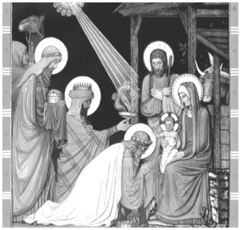

DOA BERKAT KAPUR EPIFANI 2027

Gereja Katolik sangat kaya dengan tradisi dan simbol iman. Kita berupaya setia
melestarikan tradisi iman Kristiani. Salah satunya adalah tradisi "memberkati"
rumah dengan kapur pada hari raya Epifani. Tradisi ini mengingatkan pengalaman
umat Israel dalam kisah Keluaran malam pembebasan dari perbudakan. Pintu rumah
umat yang ditandai dengan darah anak domba Paskah diselamatkan dari maut. Bagi kita,
Kristus adalah Anak Domba Paskah membebaskan kita dari dosa dan maut.
Seturut tradisi, pada Hari Raya Penampakan Tuhan / Epifani (6 Januari
atau bisa digeser ke hari Minggu terdekat), pastor paroki memberkati kapur yang akan
dibagikan kepada masing-masing keluarga. Setelah mendapatkan kapur, keluarga akan
pulang ke rumah masing-masing dan mohon berkat untuk rumah dengan menuliskan:
20 + C + M + B + 27 di palang pintu masuk (kusen) atau daun pintu utama.
Biasanya, kepala keluarga memimpin upacara pemberkatan singkat ini.
APA MAKSUD HURUF DAN ANGKA TERSEBUT ?
Angka 20 dan 27 adalah angka tahun saat ini. Huruf
C, M, B adalah singkatan dari ketiga nama Para Majus, yakni
Caspar, Melchior, dan Balthasar.
Namun di sisi lain huruf-huruf tersebut merupakan ungkapan doa dalam bahasa Latin
"Christus Mansionem Benedicat", yang berarti
"Semoga Kristus memberkati rumah ini".
Lambang "+" sendiri merupakan lambang Salib:
tanda keselamatan dan harapan.
MAKNA TRADISI INI ?
Makna tradisi berkat kapur adalah wujud penghayatan iman dan permohonan kepada Allah
supaya melindungi rumah kita dari kekuatan si jahat. Selain itu dengan menandai pintu
dengan kapur yang telah diberkati, keluarga kristiani bertekad selalu menyambut Kristus
dalam keluarga di tengah suka duka sepanjang tahun. Tradisi ini merupakan penanda harapan
agar keluarga kristiani menjadi berkat bagi tetangga sekitar dan sesama yang berkunjung.
Semoga semua rumah-rumah dan keluarga kristiani bisa menjadi bintang terang dan penuntun
di tengah masyarakat.
Secara khusus, pada tahun 2027 ini, merupakan tahun transisi menuju
ARDAS KAJ yang baru yaitu, Tahun Ekaristi.
Kita dipanggil untuk mencintai Ekaristi dan mengimplementasikan nilai-nilai Ekaristi
dalam hidup keseharian kita sebagai perwujudan tema
Tahun ARDAS KAJ 2028-2032: “Ekaristi Daya Ilahi Kehidupan Gereja”.
Semoga sepanjang tahun 2027 ini, Kristus memberkati rumah keluarga-keluarga
kristiani. Salam Sehat. Tetap Semangat. Melimpah Berkat.
DOA BERKAT RUMAH
| P |
Dalam nama Bapa, dan Putera, dan Roh Kudus. |
| U |
Amin |
|
| P |
Pertolongan kita dalam nama Tuhan |
| U |
Yang menjadikan langit dan Bumi. |
|
| P |
Tuhan bersamamu. |
| U |
Dan bersama rohmu |
|
| P |
Inilah Injil Suci menurut Yohanes |
| U |
Dimuliakanlah Tuhan. |
“Pada mulanya adalah Firman; Firman itu bersama-sama dengan Allah dan Firman itu adalah
Allah. Ia pada mulanya bersama-sama dengan Allah. Segala sesuatu dijadikan oleh Dia dan
tanpa Dia tidak ada suatu pun yang telah jadi dari segala yang telah dijadikan.
Firman itu telah menjadi manusia, dan tinggal di antara kita, dan kita telah melihat
kemuliaan-Nya, yaitu kemuliaan yang diberikan kepada-Nya sebagai Anak Tunggal Bapa,
penuh kasih karunia dan kebenaran”.
(Yohanes 1:1-3.14).
Setelah mendengar Injil. Hening sejenak, lalu bersama-sama berdoa:
Allah Bapa pencipta langit dan bumi, Engkau mewahyukan Putera-Mu yang tunggal kepada
segala bangsa dengan bimbingan bintang. Berkati rumah kami ini dan semua orang yang
mendiaminya. Semoga kami diberkati dengan kesehatan, kebaikan hati, kelemah lembutan
dan taat setia pada Perintah-Mu. Penuhilah kami dengan terang Kristus, sehingga cinta
kasih kami satu sama lain dapat melimpah kepada sesama. Kiranya rumah dan keluarga kami
Kau mampukan menjadi saluran berkat dan kasih-Mu kepada siapapun yang akan berkunjung.
Semoga kami menjadi tetangga yang baik dan ramah bagi sesama di sekitar kami.
Semoga di tahun 2027, Tahun Ekarisi, kami, umat KAJ, semakin mencintai dan
menghidupi Ekaristi dalam keseharian serta dengan bimbingan Roh Kudus mampu mewujudkan
nilai-nilainya dengan kejujuran, moralitas, dan kasih demi memartabatkan sesama.
Dengan pengantaraan Kristus Tuhan kami. AMIN.
Bunda Maria, doakanlah kami. Bapa Yusuf jaga dan lingungi kami. Amin.
Setelah doa berkat didaraskan bersama silahkan menorehkan di pintu depan rumah /
kusen pintu rumah:
20 + C + M + B + 27
Ketika menuliskan inisial Tiga Raja, Salib dan tahun 2026, ucapkan bersama:
" Christus Mansionem Benedicat " atau
"Semoga Kristus memberkati rumah kami ini”